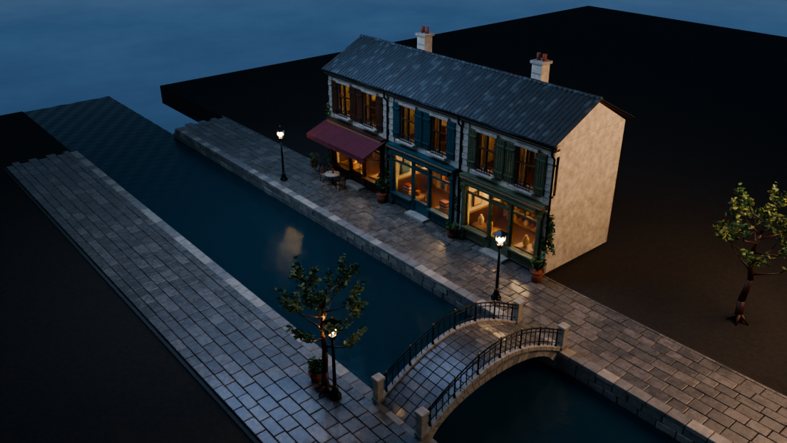
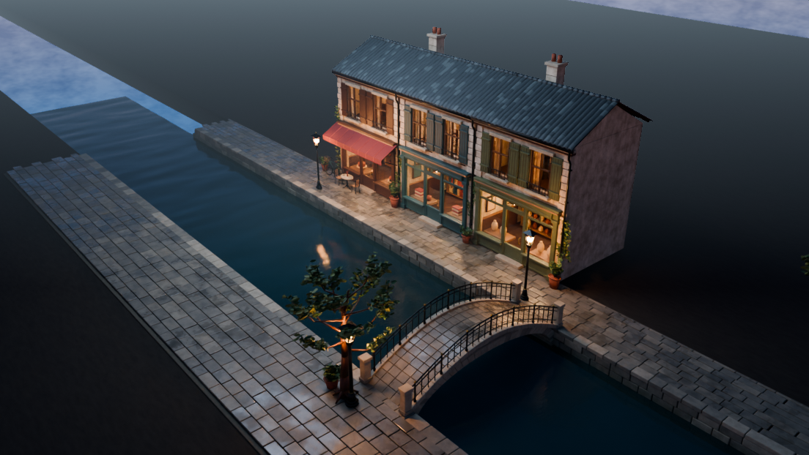

搭出了相同元素，
没有还原相同关系。
店铺开间、桥的尺度、岸线宽度与前后景占比仍不一致。V2 改善了观看方向，但并未完成相机匹配和几何配准。
影响：整体第一眼就不是同一个画面。阶段结论 / 保留进展，也保留差距
从一张雨后临水老街概念图出发，用 Codex 控制本机 Blender 搭建、渲染。前三轮偏重氛围，V4 改为先对齐机位与桥岸比例；现在也能直接旋转查看真实场景。构图改善了，整体视觉仍未还原。
00 / REAL GEOMETRY
真实场景 GLB · 可旋转、缩放、查看背面
新增 V4 增强光影，可切回原结构预览。
同一真实网格，新增烘焙光照、原天空与实时水面倒影；不是把主视角照片贴到平面。
点击载入后启用 3D；未载入时不持续占用 GPU。
下载当前 GLB ↓操作：鼠标左键拖动旋转，滚轮缩放，右键拖动平移；触屏单指旋转、双指缩放。也可用上方预设视角；画布获得焦点后方向键平移。
为什么旧网页更像白天的模型？原结构预览丢弃了源场景的 20 盏灯、程序纹理、湿润细节与天空，只保留常数材质，再用均匀的展示灯照亮。水面没有倒影，墙面和窗户自然显得平、亮、缺少冷暖层次。这是查看方式的损失，不是原工程突然变差。
新增增强光影，不靠堆模型。V4 对原材质进行漫反射颜色、直射和间接光烘焙，网页选用其中 7 组；补回原世界天空、AgX 色调映射、湿区变化和实时水面倒影。切换“网页画质”保持当前机位，便于直接比较。查看当前导出记录 ↗
仍是 29 个材质网格、226,532 个三角面；原 .blend 和旧 GLB 不变。新增 UV 与贴图会增加文件及显存占用，UV 接缝也可能增加导出顶点；每次操作增加一张 512 × 512 水面反射图，一张 1024 × 1024 阴影图只在切换场景时更新。仍按需绘制，不持续播放水波。
导出共包含 9 组烘焙，网页对屋顶两组退回 PBR，避免有限 UV 分辨率产生黑斑。其余 7 组漫反射光被固定在纹理中，不能假装它们会响应重新布光；其余表面使用实时近似，灯光数量仍控制为 3。玻璃折射、完整全局光照、倒角和合成雾并未等价迁移，Three.js 的 AgX 也不完全等同 Blender 的 Medium High Contrast look。PNG 烘焙亮部存在范围限制，因此最终画质仍以下方 Cycles 原图为准。
01 / THE EVIDENCE
不裁掉问题区域，不用概念图冒充渲染。
图片可放大，也可下载原件。
 放大查看 ↗
放大查看 ↗ 放大查看 ↗参考概念图V4 真实渲染
放大查看 ↗参考概念图V4 真实渲染先用人工选点约束相机、桥位置与岸线比例，不增加物体，也不继续改材质。店铺和桥的画面位置更接近参考，但窗户与屋顶仍模板化，植被、远景及湿润反光差距依旧明显。
对照说明：参考图与各版机位、几何并未精确配准。滑动只辅助观察视觉差异，不构成像素误差或相似度测量。下载参考原图 ↓

V1 / INDEPENDENT VIEW
首版保存后重新打开，并从独立机位渲染；V2、V3 也保存重开后检查并生成主视角图。场景没有外部图像贴图依赖。
该图同时暴露简化的侧墙和背景。核验只证明存在可编辑几何，不证明完整世界、生产级拓扑或视觉还原。
下载首版核验记录 ↓V4 / ALIGNMENT FIRST
从 V3 工程继续，保留历史结果
修正验收顺序，不把“小误差”包装成“已还原”。
先在参考图上手工标记店铺分界、屋檐、桥拱与岸线，再将场景中的对应位置投影到相机画面。此次主要调整相机与既有桥岸布局，不新增物体，不继续做材质润色。
读取对齐记录… 此指标只反映人工选定点的构图偏差，不是图像相似度分数。

同时保留工程、独立机位核验图和可旋转的 GLB。机位对齐不代表背面已经完善，也不意味着旧化、雨后反射和环境层次已经达到参考图。
手工近似点，不是标定真值；像素误差按 1672 × 942 画幅换算。可见区域之外的结构未被这些点约束。
| 人工选点 | 参考位置（左上为 0,0） | V3 偏差 | V4 偏差 |
|---|
EARLIER GUIDE / 原图归档
 点击放大原图 ↗
点击放大原图 ↗02 / HOW WE GOT HERE
讨论 DeepSeek、Blender 插件与 MCP。关键不是模型是否“长了操作软件的手”，而是宿主能否调用工具、读取反馈，再让 Blender 执行。
产物：控制链路理解；不是对源帖效果的复现证明。不使用原帖图片。先探索复杂街景，再因时间与效果风险收敛到三间店铺、一座桥、一段运河和少量陈设，保留精致感与雨后氛围。
产物：本页参考概念图；隐藏区域和真实尺寸并不可从单图确定。脚本搭建、设置材质灯光、保存工程并渲染。主体齐全，但机位像模型展示，墙面偏暗，建筑与水面过于规则。
判断：控制跑通，视觉差距明显。改成沿河近景机位，重做天空、冷暖光照和湿润材质，调整既有远景。用户反馈“好多了”，但写实差距没有消失。
判断：构图与光照是这一轮最有效的调整。橱窗更清晰，地面与水面反光更明确。用户最终仍认为与参考差距较大，因此把结果作为阶段实验记录，而不是达标交付。
判断：继续微调有收益，但不能把改善等同于复现。用 12 个手工标记点和 4 个岸线约束点，调整主机位与既有桥岸布局。保留两张小样、正式图、独立机位与真实 GLB，支持旋转检查。
判断：局部构图误差缩小，不等于整图还原；材质与背景问题仍在。 查看完整图，不止是一张封面 ↗
查看完整图，不止是一张封面 ↗
03 / THE GAP IS THE FINDING
以下是基于图片的观察与我们的分析，
不是定量评测，也不是模型能力排名。
店铺开间、桥的尺度、岸线宽度与前后景占比仍不一致。V2 改善了观看方向，但并未完成相机匹配和几何配准。
影响：整体第一眼就不是同一个画面。参考图中磨损、积水、反射、灯光和微小凹凸相互作用。本次以程序噪声近似，色块与边缘仍较均匀，反射分布也不同。
影响：更接近风格化场景，而非摄影。重复的窗框与瓦片、稀疏的枝叶、简化的陈设和远景收尾，难以形成参考图的生活感。固定拓扑规模限制了几何层面的补足。
影响：局部可读，但整体仍有模型感。用语言理解画面再写几何脚本，会引入比例和审美选择；没有运行专门的图生 3D 模型，也没有恢复不可见区域的真实结构。
影响：控制能力通过，视觉还原仍需单独验证。接口解决“能不能动”，工作流和资产决定“能不能做好”。
这不是一次 Blender 算不动的失败，也不能据此认定某个 AI 更弱。我们还缺少同输入、同预算、同验收条件的对照。
04 / MODEL · BRIDGE · EXECUTION
没有安装新插件，没有调用 MCP 或在线图生 3D 服务。命令行运行脚本，场景保存为可编辑 .blend；V2–V4 直接加载旧工程继续调整。Blender 命令行文档 ↗
仓库提供连接、场景检查、Python 执行和视觉反馈等能力。这里说明其控制机制，不确认原帖每个画面的生成条件、耗时或是否使用其他资产。DSH 插件原仓库 ↗
这是社区集成，不是 Blender 官方产品。它提供通用工具连接方式，不能理解成只为某一个模型准备的“专属建模能力”。MCP for Blender 原仓库 ↗
三条路线都可能操作 Blender，但接口相近 ≠ 最终能力等价。可用工具、上下文、反馈频率、执行权限、资产来源和迭代策略都会影响结果；也不能根据适配对象推断库是由哪个 AI 编写的。
05 / COST & VERIFICATION
| 版本 | 执行方式 | 构建 / 准备 | 纯渲染 | 脚本总计 | 采样上限 | 原始记录 |
|---|---|---|---|---|---|---|
| V1 · 首次搭建 | 从零创建场景 | 49.24 s | 9.88 s | 59.22 s | 144 | JSON ↓ |
| V2 · 构图光照 | 加载 V1 工程 | 1.31 s | 10.19 s | 11.51 s | 112 | JSON ↓ |
| V3 · 材质反光 | 加载 V2 工程 | 1.29 s | 10.92 s | 12.21 s | 112 | JSON ↓ |
| V4 · 构图对齐 | 加载 V3 工程 | 3.43 s | 15.41 s | 19.01 s | 112 | JSON ↓ |
分项与总计因未列出的写图、保存等开销略有差异。所有秒数均不含分析、写脚本和此前的预览调参；V4 独立机位另渲染 6.54 秒，不计入主图的 19.01 秒。完整投入未统一计时，不补填估算。V2–V4 复用工程，不能拿总计直接计算“建模提速”。
固定规模，不是完全不改。V2–V4 的对象、基础拓扑、686 个修改器及灯光数量保持不变；前两次优化调整过顶点和材质节点，V4 仅改变相机与既有空间布局，材质未改。
已核验，不是生产认证。保存重开、有限坐标、旧版哈希保持、无外部图片依赖已检查；没有做完整拓扑审计、盲评或整体相似度评分；V4 选点误差不替代这些验收。
没有付费 3D 接口，不是零成本。本轮未调用在线 3D 生成服务；模型调用、人的判断、编写与维护脚本、本机算力仍是投入。
06 / A BETTER NEXT TEST
先写清验收，再决定用哪条路线。
V4 已开始 Test B；跨方案公平对照仍未进行。
单件带孔、对称结构的物体。要求只改孔径，保留轮廓、材质与相机。
V4 已开始校准店铺、桥岸与主机位；下一步应先验收剩余关键比例，再决定是否投入材质和光照。
同一工程输出主视角、侧视角和一次局部修改结果，不能只交最漂亮的一张。
相同输入与资产权限 → 相同硬件、时间与迭代预算 → 相同输出尺寸与验收项 → 记录完整过程与失败 → 再比较方案。
尽量一次只改变一个因素。换接口、换模型又换资产后，不能把全部提升归因于某一个模型。对我们的意义
已经值得复用：可编辑的空间草稿、构图试验、批量改灯光、为后续图像或视频制作提供多视角参考。
暂不应承诺：一张复杂图片输入后，低成本稳定复刻成照片级 3D 世界。
投入判断：构图和关键材质还没定准时先修正大关系；收益变小时停止盲目微调，决定是否引入更合适的资产或缩小目标。
07 / SOURCES & ARTIFACTS
.blend 工程、复现脚本和历史版本保存在本地项目的 artifacts/ 与 scripts/；网页已提供真实几何的轻量 GLB 查看副本，但没有打包原始 .blend、运行日志或 Blender 安装环境，也不会在浏览器里自动执行建模。用于效果对照的图片为本次参考图及真实渲染原件，没有为展示重新生成“更好的效果”；前期生成的引导图作为解释性历史材料单列，不是实测结果。